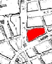
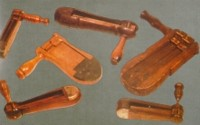
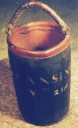
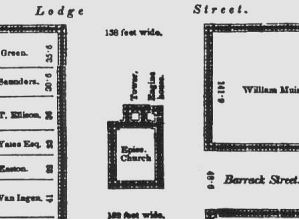

Downtown Albany was stirred from its Sunday evening slumber by the piercing cries of "fire!" Flames spreading from a stable owned by Leonard Gansevoort quickly consumed most of the wooden buildings in the block of Market Street bounded by State Street, Middle Alley, and Maiden Lane. The blaze was kept from engulfing the entire old city by spraying the still unscathed Pearl Street homes with water passed along from nearby wells to fill the city pumpers. Crews of residents chopped and cleared a number of frame structures - thus forming a firebreak. Later, on that night of November 17, 1793, rain fell, turned to sleet, and stifled the flames of Albany's first great fire. Another fire in 1797, destroyed several blocks in the North End of the city. Despite the vastness of land in the Hudson Valley, Albany was born and built as a closely configured, European-style, almost medieval town. With city houses set so close to each other and with additions, sheds, and other ramshackle structures attached to the sides of most buildings, the threat of fire was a constant concern for the people of colonial Albany. Potential fire hazards abounded. Most homes were built of wood and every house had one or more chimneys that vented the fireplaces used for heating and cooking. And city shops - particularly the bakeries and smithies located all over the community, kept a flame alive even when no one was actually working. Albany escaped the ravages of a community-enveloping blaze until 1793 mostly through vigilance and simple prevention. From the earliest days, the city fathers provided leadership by enacting ordinances regulating the types of materials that could be used in building (beginning with banning thatched roofs in the 1670s), by insisting that streets and alleys be kept clear as "fire lanes", by restricting the storage of hay and other combustibles, and by appointing firemasters for each of the three wards who would watch for and report potential fire hazards. Persistent violators could be and were fined. In addition, the city watchmen, criers, and keepers of the rattlewatch, which prowled or patrolled the community day and night until the nineteenth century, also encouraged their neighbors to be mindful of the citizen's role in fire prevention. City planners understood that when a fire did break out, some buildings would be lost. But dousing the adjacent buildings with water might control the blaze. Although Albany was located near an abundant supply of river water, carrying water inland (and uphill) was a chronic problem whose solution initially was based on community cooperation. Each householder had one or more leather fire buckets like that owned by Court Street resident Abraham A. Lansing. These could be used by so-called bucket brigades as neighbors filled and passed them uphill to fill the fire pumpers of up ladders so that they could be thrown on actual flames or even more likely on nearby, vulnerable buildings. The firemasters also were instructed to ensure that the city-owned fire ladders and hooks were maintained in strategic places. In that way, colonial Albany survived several small fires and suffered no major fire damage until 1793 - a testimony to civic pride and community cooperation. In 1732, Albany took a great step forward in fire control when the common council purchased a fire engine manufactured by Richard Newsham of London. By that time, all of the larger early American cities had invested in the Newsham engine. Robert Lansing, a prominent gunsmith, was given charge of the Albany pumper that was kept in a shed built behind St. Peter's Church - representing the highest elevation of settlement until the 1790s. During the 1790s, Albany would purchase a second engine. Unlike New York, Boston, Philadelphia, and Charleston, Albany suffered no large fire during the Seven Years War or the War for Independence. Although protest fires were set in 1766 and, a decade later, the fear of Tory or Negro uprisings was constant, Albany was able to survive those troubled times - a testimony to the face-to-face nature of city life and a healthy respect for property and mutual well-being in a close-knit community.  In 1773, the city fathers codified fire regulations in the first published Laws and Ordinances of the city of Albany. With the end of the war in 1783 and the opening of the frontier to settlement, Albany became an American boomtown. New settlement burst its stockaded colonial boundaries and spread along the river and up the hill - adding many new business, residence, and industrial blocks for a population would multiply fifteen-fold before the Civil War. Some of the new Albanians were from European cities that had wrestled with fire for centuries while others came from the American countryside where fire fighting was more of an individual responsibility. At the same time, Albany's traditional leaders were superceded by newcomers who, following two debilitating fires during the 1790s, recognized the need for fire protection beyond vigilance and neighborhood cooperation. This introductory, theme essay on an important community issue is basic to understanding the realities of life in an early American community. It is very much in-progress. Detail from the De Witt map of 1794 showing core area destroyed by the fire. Wooden rattles similar to those used by the Albany "Rattle Watch." Leather fire bucket from the 1790s owned by Abraham Lansing. Collection of the New York State Museum. The Engine House as shown on an engraving of the Bogert Map of 1792. It was attached to the rear of St. Peters church on upper State Street. Engraving printed in Munsell's Annals. revised 1/4/08 |